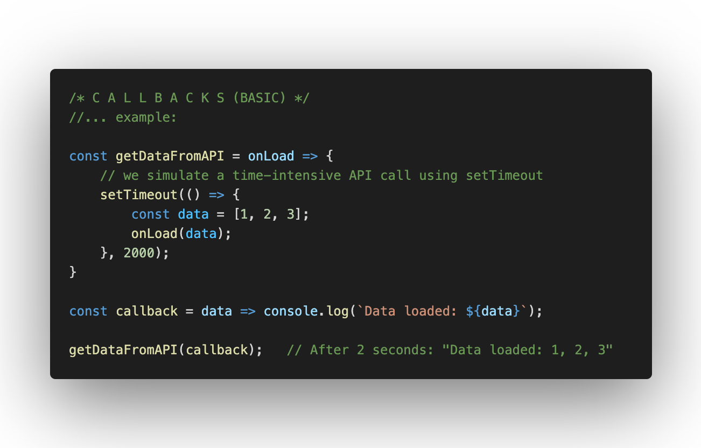

Functions can be defined either using function declarations or function expressions.
Function expressions can be stored in variables, can be used as anonymous functions (e.g. as function parameters), and can be returned by higher-order functions.
Callbacks: functions as parameters
Like any other object and every primitive, functions can be passed to other functions as parameters.

Array Functions
JavaScript offers a range of functions to transform arrays. The outputs of these transformations are either arrays or primitives. The most important array functions are:
map(): apply a function to each element of an array and store the outputs in a new array.
filter(): select values that fulfill a condition (predicate) and store them in a new array.
reduce(): reduce an array to a single value.
Function: map()
Syntax:
array.map(callback(currentValue [, index]));
Callback parameters:
currentValue: the current array element
index: the index of the current array element (optional)
Function: filter()
Syntax:
array.filter(callback(currentValue [, index]));
Callback parameters:
currentValue: the current array element
index: the index of the current array element (optional)
The callback’s return value is interpreted as a true or false.